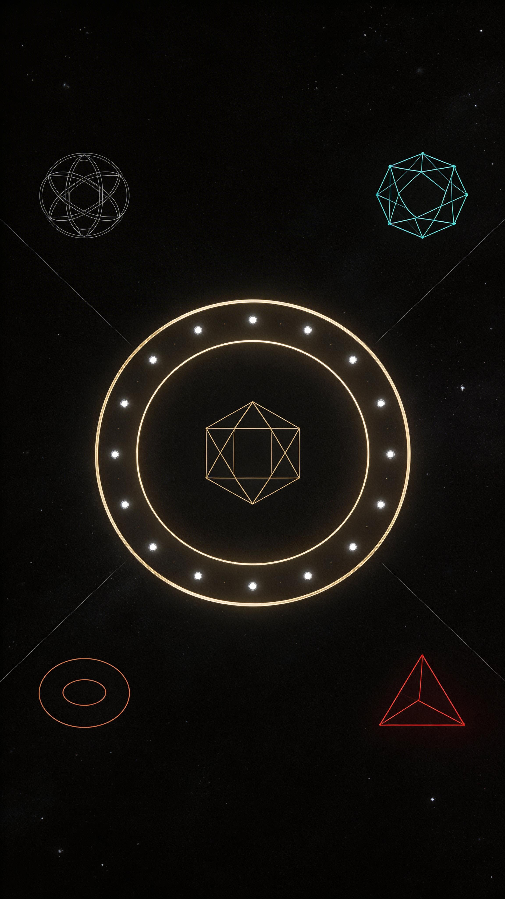

En el taller de la calle de los Impresores, Nicolas Conver no sabía que estaba creando un mito. Sus matrices de madera, talladas a contraveta, producían líneas limpias que resistían cientos de impresiones. Sus colores, aplicados con plantillas de latón, respetaban los límites de cada figura como si un monje iluminador hubiera pasado horas sobre cada carta.
Durante casi dos siglos, el mazo de Conver durmió en los archivos. Hasta que, a mediados del siglo XX, dos hombres lo despertaron: Paul Marteau, que desveló la lógica secreta de las cartas, y un poeta chileno exiliado en París, Alejandro Jodorowsky, que junto a Philippe Camoin restauró los colores perdidos.
Hoy, esas imágenes viajan en el tiempo y llegan hasta ti. Cada carta guarda un eco del taller, del olor a tinta, de las manos que las sostuvieron antes. Cuando consultes el tarot, no estarás solo: contigo estarán Conver, sus aprendices, y todos los que buscaron respuestas en estos espejos de papel.